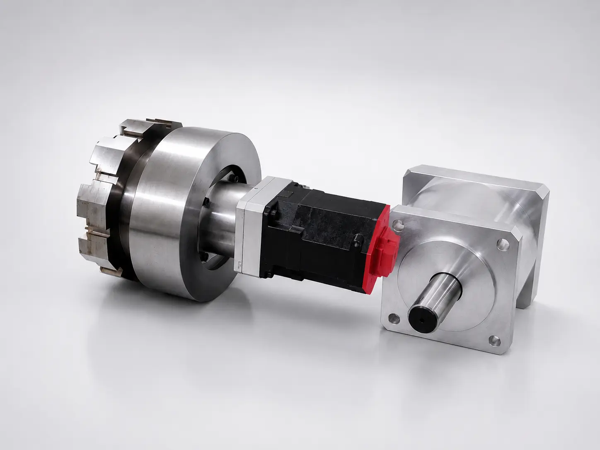

기술소개
아이엠에르텍의 핵심 기술력을 소개합니다.
N:1
N:1 마그네틱 감속기
마그네틱 기어 기술을 적용하여 비접촉 방식으로 토크를 전달하는 혁신적인 감속기입니다.
- 비접촉 토크 전달
- 높은 효율과 신뢰성
- 소음·진동 저감
- 정밀 운전 및 제어 가능
- 청정 환경 적용 가능

기술 특징
🧲
비접촉 토크 전달
자력을 통해 토크를 전달하여 마모와 발열을 줄입니다.
🔇
소음·진동 저감
기계적 접촉 요소를 줄여 운전 소음을 낮춥니다.
⚙
유지보수 부담 감소
접촉부 마모 감소로 장비 수명 연장에 기여합니다.
🍃
청정 환경 대응
윤활유 사용 최소화로 클린 환경 적용성을 높입니다.
🎯
정밀 제어
안정적인 감속비와 토크 전달을 목표로 설계됩니다.
작동 원리
내·외부 로터에 영구자석을 배치하여 자속을 통해 기계적 접촉 없이 토크를 전달합니다.
구동측
→
자기장
→
피동측
적용 분야
▣
반도체/디스플레이
클린룸 장비, 정밀 스테이지
클린룸 장비, 정밀 스테이지
✚
의료/바이오
분석 장비, 무균 환경 장비
분석 장비, 무균 환경 장비
🤖
로봇/정밀구동
협동로봇, 정밀 액추에이터
협동로봇, 정밀 액추에이터
💧
청정/무윤활 환경
진공, 클린룸, 식품 장비
진공, 클린룸, 식품 장비
⚡
에너지/특수장비
정밀 구동 시험 장비
정밀 구동 시험 장비
기술 도입 및 협력을 원하시나요?
아이엠에르텍의 전문 엔지니어가 최적의 솔루션을 제안해 드립니다.